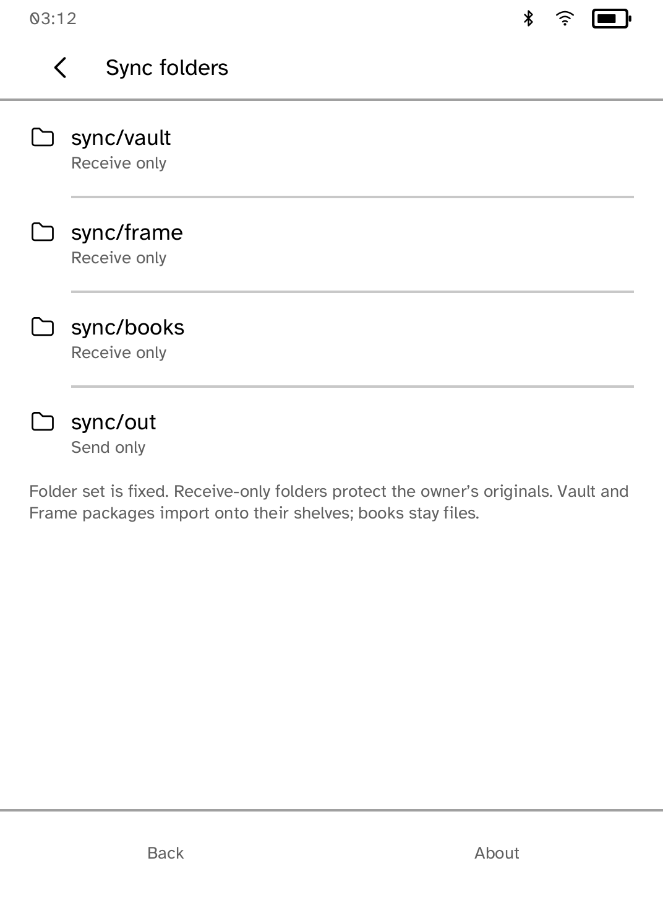
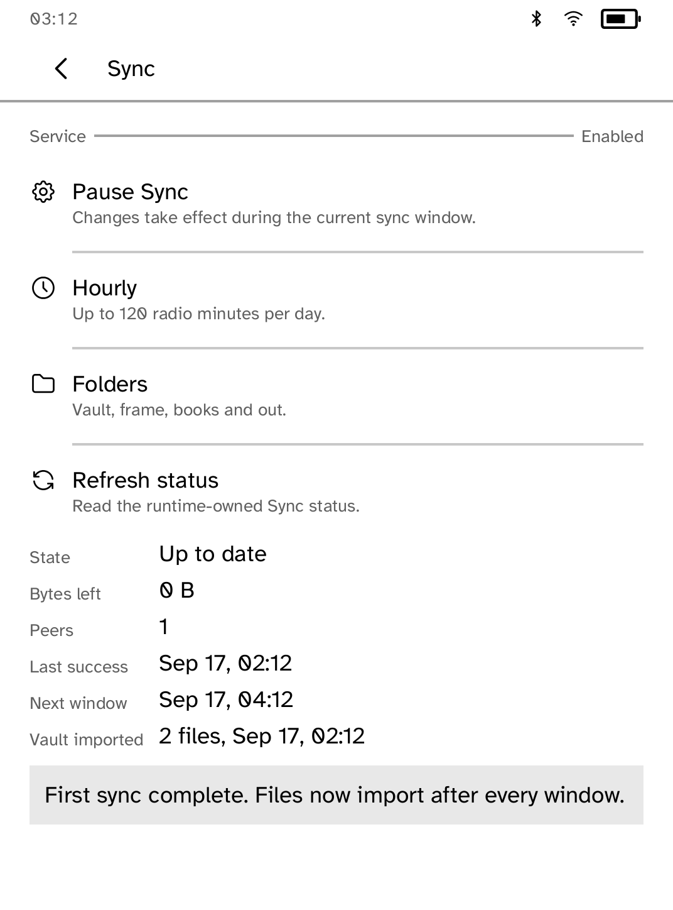
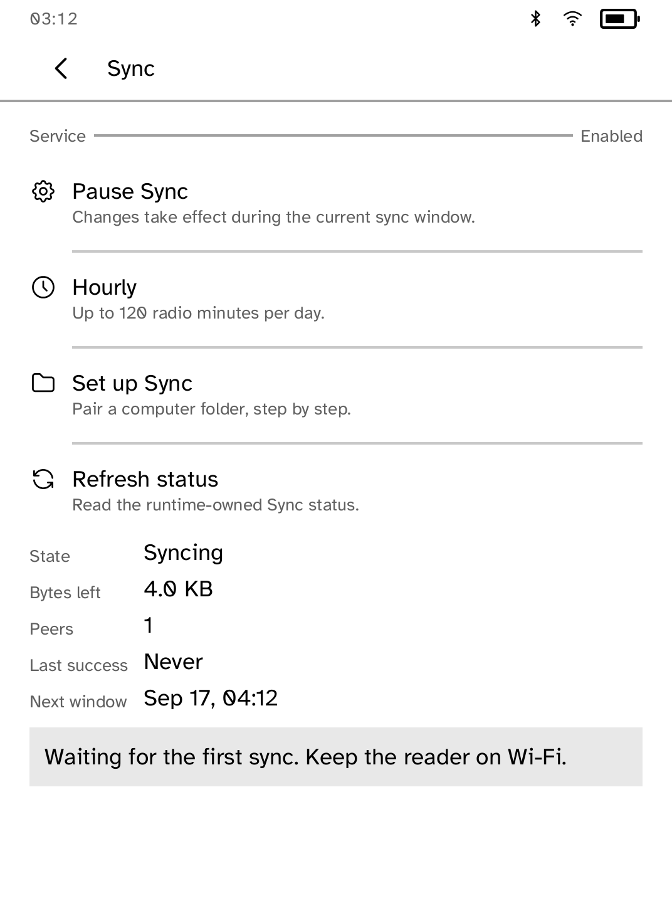
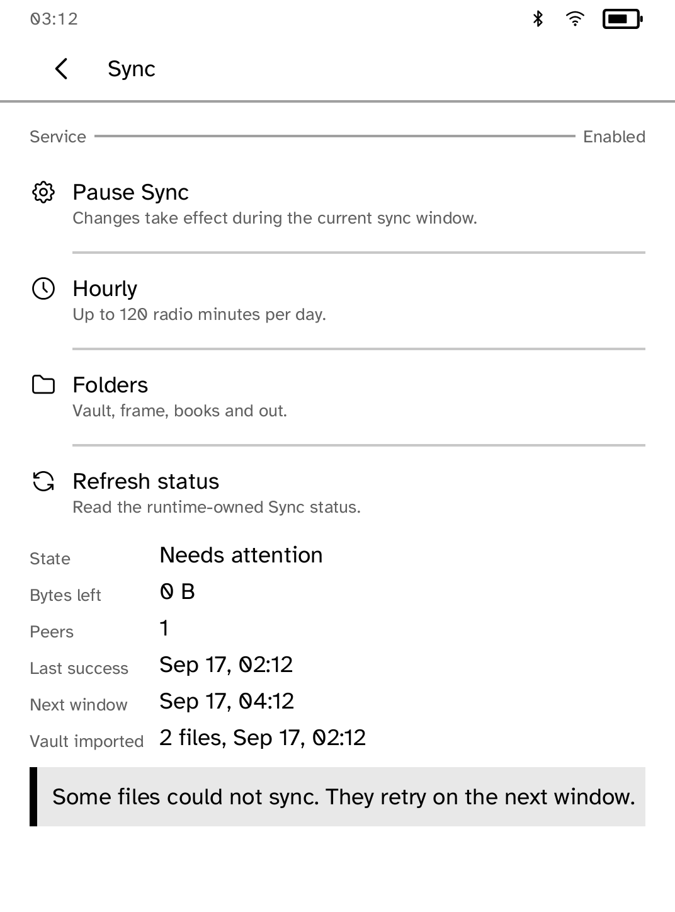

Devices
Sync
Sync notes, photos and books from your computer to your Kobo with Syncthing. Sync when you tap Sync now, or on a schedule while Cobalt is open on Wi-Fi.
- Version
- 0.3.6
- Permissions
- scheduled-wake
- Requires
- Cobalt 0.3.32




New in 0.3.6
Sync is one switch at the top of the screen that says whether files are moving or paused, and the schedule is picked from a list. The status screen keeps every fact on the panel after a sync brings files in.
App setup
Before you install
- Set up the reader once over USB, if you have not already. Sync also needs Syncthing on this computer, installed with its package manager.
kobo setup - With the reader awake on Wi-Fi, pair one folder on this computer with a folder on the reader. The first time, the reader downloads the Syncthing engine.
kobo sync setup ~/Documents/notes --folder vault - Start this computer's side of Sync and leave it running.
kobo sync run - On the reader, open Sync and tap Turn on Sync. The first sync starts at once and takes up to five minutes.
Commands need the kobo command on macOS, Linux or Windows WSL. This installs it ready-built, without touching the reader:
curl -fsSL https://bandarlabs.github.io/Cobalt/install.sh | sh -s -- --no-setup
New to Cobalt?
Install Cobalt from your browser
Plug your Kobo into this computer and install Cobalt in about a minute. After that, apps install over Wi-Fi.
Works in Chrome, Edge and Opera. Check your Kobo is supported.
Already have Cobalt?
Link your Kobo to install
On your Kobo, open App Store, tap the globe in the top bar and choose Link browser. Scan the QR code, or enter the pairing code and verification key.
Install on your Kobo
Your Kobo checks the app's signature before installing it.